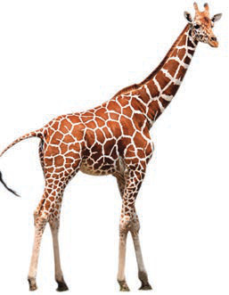

Mchango wa tunu na alama za taifa katika kujenga umoja wa kitaifa na uzalendo
Ili kuelewa vizuri dhana ya umoja wa kitaifa ni muhimu kuelewa dhana kuu zinazounda umoja wa kitaifa.Dhana hizo ni taifa na umoja wa kitaifa.Taifa ni dhana yenye maana anuwai kutokana na nyakati tofauti za maendeleo ya kisiasa duniani.Taifa ni kikundi cha watu wanaoishi katika nchi moja, wanaofuata sheria sawa, wakiongozwa na serikali moja na wanaoshirikiana mambo mbalimbali kama lugha historia na mila.Watu wa taifa hujiita kwa jina linalowaunganisha.Kwa mfano, watu wa Tanzania huitwa Watanzania.Umoja wa kitaifa ni hali ya watu wa taifa moja kuwa wamoja bila kujali tofauti zao za makabila, rangi, dini na siasa.Umoja huu unajengwa kupitia mshikamano, maelewano, kuheshimiana na kushirikiana katika shughuli za maendeleo ya taifa.
Bendera ya Taifa
Nembo ya Taifa

Twiga
Mwenge wa Uhuru

Kazi ya kufanya namba 4
Tumia Kielelezo namba 1 kutoa maana ya alama zilizotajwa kwenye jedwali lifuatalo
| Na | Alama | Maana yake |
|---|---|---|
| 1. | Bendera ya Taifa | |
| 2. | Mwenge wa uhuru | |
| 3. | Twiga | |
| 4. | Fedha | |
| 5. | Nembo ya Taifa |